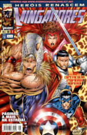

Aqui vou mostrar imagem cropada do hulk
!
Nesta edição dos vingadores de 1996, é feito um resgate depois de uma descoberta do cientista Donald blankc. O resgate de um ser encontrado em um Âmbar de gelo. Quem será?
Integrantes da equipe:
voltar página 1
próxima página 3